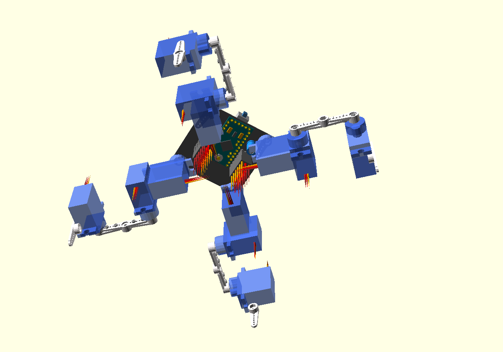

Mechanical Improvements¶
Published on 2016-02-29 in Tote HaD.
While I’m still waiting for the parts, let’s talk about the improvements I made in the mechanical design. It’s not that much, but I think they make a nicer looking and slightly more capable robot.
First of all, the positions of the servo horns on the PCB have been changed, to provide more room for the electronics, make it easier to adjust the servo positions, and hold the horns themselves in a more stable manner.
Second, I’m no longer using the screws that come with the servos – they are supposed to be used for attaching the servos themselves, not the horns, and thus are too big. I have two big bags of really small screws that will fit the horns perfectly and not even stick out.
Third, and this is the only change that actual impact on the gaits, the leg order and shape changed. They now have longer coxa – because this is the only dimension that doesn’t affect the servo strength), and are mirrored compared to the original Tote, allowing for more travel. This should make Tote slightly faster.
And finally, almost all components are on the bottom side of the PCB, so that the top can be used for any additional sensors or payload you want (it does make sense to move the battery there, though).